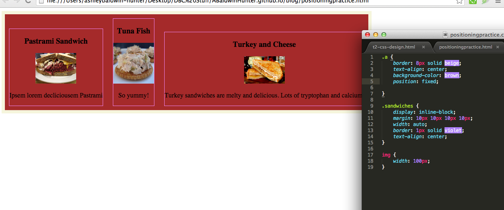

CSS Positioning: Nobody Freak Out
When I first tried to navigate the realm of CSS positioning this week, I felt like someone driving stick shift for the first time... Who had also never seen a car before. In the array of new web design techniques we learned at DBC this week - how to link to images and other webpages, alter colors, and use pseudo selectors to make an image or link change when hovered over - positioning seemed less glamorous but much more complex. But like layers of cake beneathe the icing, it provides structure and is one of the most interesting parts! Here is a quick introduction to three basic types of positioning: relative, absolute and fixed. Before plunging in, here is a quick review of the DOM structure and static position:
As you know, elements in HTML are structured like branches of a tree: one parent div (division) can branch into one or more 'child' divs, which can contain children of their own. The relationship between these elements is important for discussing relative positioning in CSS.

Static Position: the Default
First off, if you say nothing about position in the css, your elements will automatically have the position of "static" and a property called "display: block". "Display: block" simply means that they take up the entire block or horizontal space to their right on the page, even when they're not actually that wide. No other elements are permitted to sit next to them, kind of like someone in quarantine, or that guy on the train that stowes a giant bag in the seat next to him.
Since elements by default will populate the page top-down and left-right, a series of blocks (or 'divs', short for division) at the same level in the tree will look like the stack below:
Relative Positioning
Relative positioning means that elements are positioned in relation to the parent element immediately behind them in the tree. For instance, when you tell an element to sit x pixels from the top, bottom, left or right, you're referring to the edges of the parent element.
Notice that in the example above, the yellow child (.interior) sits inside its parent. (In the HTML, this child (the yellow one) is nested one level inside of the div before it, kind of like the yellow one in this sentence.) It sits slightly above its parent div's bottom because of the "bottom: 30px" in the CSS code.
Without relative positioning, our yellow child would look like this:
Note that simply specifying 'position: relative' for the child won't automatically postion it a certain way in relation to the parent. In the example above, if we don't add "bottom: 30px" after 'position relative", we get:
Putting 'position: relative' just flips the switch.
Absolute Positioning - Rogue Divs
Absolute positioning detaches an element from the elements outside or next to it (while letting it keep its connection to its own children), and anchors it instead in relation to the page. Once you specify "position: absolute," you can indicate top: 20px, etc. to place your element in relation to the page borders. It will take its children elements with it. It's kind of like a parent fleeing with young ones to escape a war or other hazardous community. It's still on earth but no longer tied down to its other relatives or parents.
As you can see in the example above, the sandwich children are all clumped together. The absolute position messes up their block-inline style.
Fixed Positioning
Finally, in fixed positioning, an element is pinned to its position in the viewer/browser, and detached from the page. Not only has it escaped from its parent (absolute) but also the earth entirely. Out in the solar system of your web browser, a fixed item stays frozen in place even as the rest of the page moves. (Try wiggling this text box around. Notice the contact icons fixed on the left of this page!)
When an element has a fixed position, it will land in the upper left corner of page unless you tell it otherwise. In our sandwiches page below, making the main parent divs have position "fixed" overrides the display:block property (which should make them take up the entire bench width next to them), and makes it look like there's only one. (The three sets are sitting on top of one another.)
What might fixed positioning be good for? Well, lots of things, including menu bars at the top of pages.
A Few Additional Tips:
- Make Background Divs Auto-fit contents; don't try to tell contents to Auto-fit Div
- To organize information on your page, you'll probably want to divide the page into sections or divs, and then within each section have a series of images or types:
Checkout the image and code below:
(with HTML shown)
(with CSS shown)
In my example, I have two panels of sandwiches:As you can see, in the HTML there is a 'div' that has within it further division into three sandwich types. Each of these is surrounded by a border.
They look nice and organized now, but there are many ways chaos could be created. In this case, notice that I put the width: auto on the div. This made it automatically size correctly to fit its contents. This is very useful!
Originally I tried desperately to fit the contents to the div behind them, but to no avail. I thought that putting a parent div before a smaller branch in the html automatically made the daughter sit inside the parent, but this is not so. Basically, being a parent just gives the div a lower z value (that is, it sits further back into the page, and its children rest on top of it, popping out toward you).

Thanks for reading. I hope this gave you some idea of a few basic positioning strategies in CSS, and the difference between statis, relative, absolute and fixed positioning!
 Twitter
Twitter GitHub
GitHub